Warps - are a special units which giving to player ability to teleport from first warp point (Entrance) to second (Exit). Player can teleport between difference places of single section, but also player can teleport between different sections. This is a one way for enter to another section, but exclusion is some NPCs which can spawn a warp to another section.
Warps and Doors toolbox
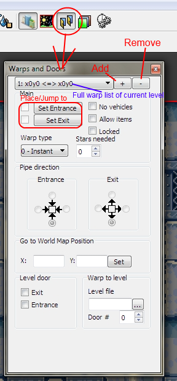
All warp entries shown in the special list:
In the SMBX all warps entries are hidden and you can't see them. In the PGE-Editor is possible to get full list of warps:
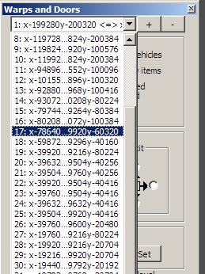
Context menu of warp point

Warps have a standard flags:
No Vehicles - (In SMBX this option was named as "No Yoshi") When playable character will enter into this warp, he/she will exit without vehicle (Vehicle will be returned back when player will exit from this level).
Allow items - (In SMBX this option was named as "Allow NPC") With this flag playable character can get carryed item through this warp. Without this flags item will be leaven about entrance of this warp.
Locked - This flag will close door with a lock. To open this warp player should take a key. When key was applied, warp will be opened for entering.
Special flags:
Level entrance - this option allows to use alone point. With this flag impossible to enter in this warp, this warp can be used just for entrance into this level, for example, from world map or from another level with definition of target warp ID.
Level exit - this option allows to use alone point. When playable character enter into this warp, level exiting will be caused.
Values and options:
Stars needed - This is a limit of star number. Player can enter into this warp when he/she collect a definied number of stars.
X and Y - This is an exit to world map with target coordinates. If coordinates are defined, this warp will be an exit into the world map with teleporting to target point by coordinates.
Warp type - Definition of the warp type: Instant, Pipe or Door.
Pipe directions - This is a directions of warp, which can be used for "pipe" warp type only.
Level file name - This is a definition of the entrance into another level file to make a warp into them.
Door # - (In the SMBX this option was named as "Warp to"). If value is 0 (Normal entrance) player will start target level from his(her) default start point, else player will entered into level by target warp point by ID.
Note: If you was removed some warp entry(ies), to re-count warp ID's you should reload level (press F5 key)!
The warps have a three types: Instant, Pipe and Door.
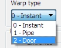
Instant - Player will be instantly teleported on any contact with entrance warp point.
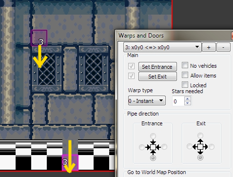
Door - Player can enter into this warp only when it contacted with entrance point and when player will press up key.
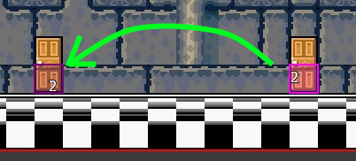
Pipe - this is a directional warp. To enter into this warp player need to contact with entrance warp point and press the key equal to defined direction. Player will be exited from exit point with definied exit direction.
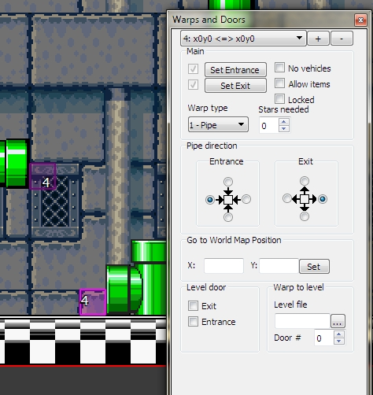 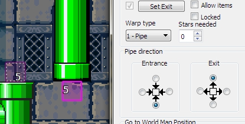
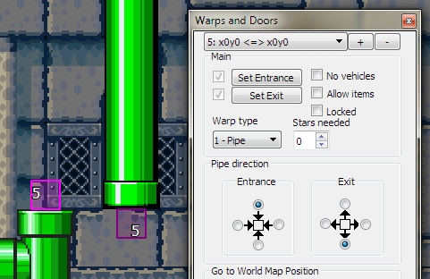
Each warp have an own entry. At first you need to add a new warp entry into the list:
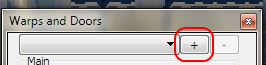
And now, you can place points (or you can define warp options before).
To place entrance or exit point,
you should to press the "Set Entrance" to place or jump to, if already placed, entrance point

and "Set Exit" to place or jump to, if already placed, exit point.
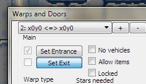
Note: If adjacent checbox is checked - this point is already placed, and you will jump to placed point when you press a point button.
Placing of the Exit warp point to the map
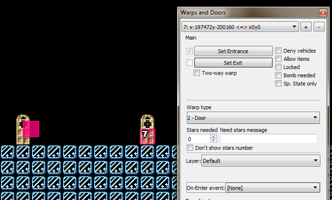
Don't forget to set up warp settings!
Note: the warp entry must have both placed points or warp entry will be marked as broken and will not be saved into the file. Exclusion: You can have single-point warp entries when they are have one of those flags: "Level Exit" or "Level entrance".
To make a two-way warps, you should make a second warp entry with opposide point placements:
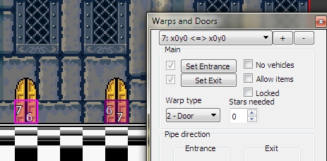
Locked warp - is a warp with closed entrance which possible to open with a key:
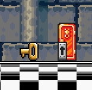
To make a locked door, you need to set the "Locked" flag into the 'checked' state:
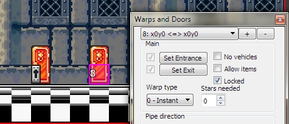
To enter into this warp you must have a specified number of the stars!
Locked door
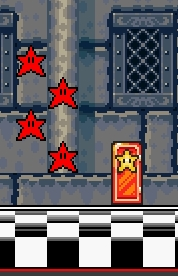
To lock warp entrance with stars, you must set a number of stars which needed for ability to enter into this warp:
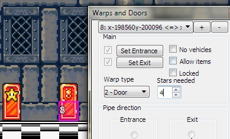
There are a special flags which allowing to place alone warp point.
Level entrance - allows to place alone exit point. Set this flag if you wish to use this warp as entrance into this level. With this flag warp will have no entrance point.
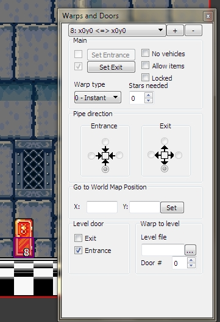
Level Exit - allows to place alone entrance point. The level will be exited when player will enter into this warp.
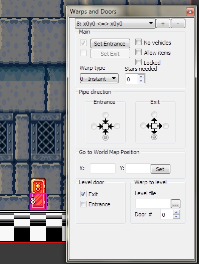
Player will be entered into another level if he(she) enter into this warp.
You should simply define the level filename in the Level file field. You also can browse the level file and select necessary file from list
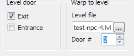
The number of door will show: where player must be entered. If value is a zero - player will start level from his(her) default start point.
Level file list of same folder which contains editing level file
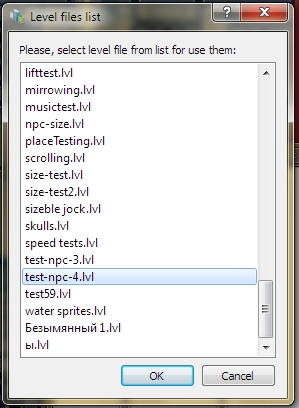
You also can create the exit to specified coordinates of the world map. You need to simply define the world map coordinates to make exit into the world map:
You also can press the "Set" button and select target point on the world map in interactive mode!
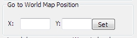
World map point selection dialog
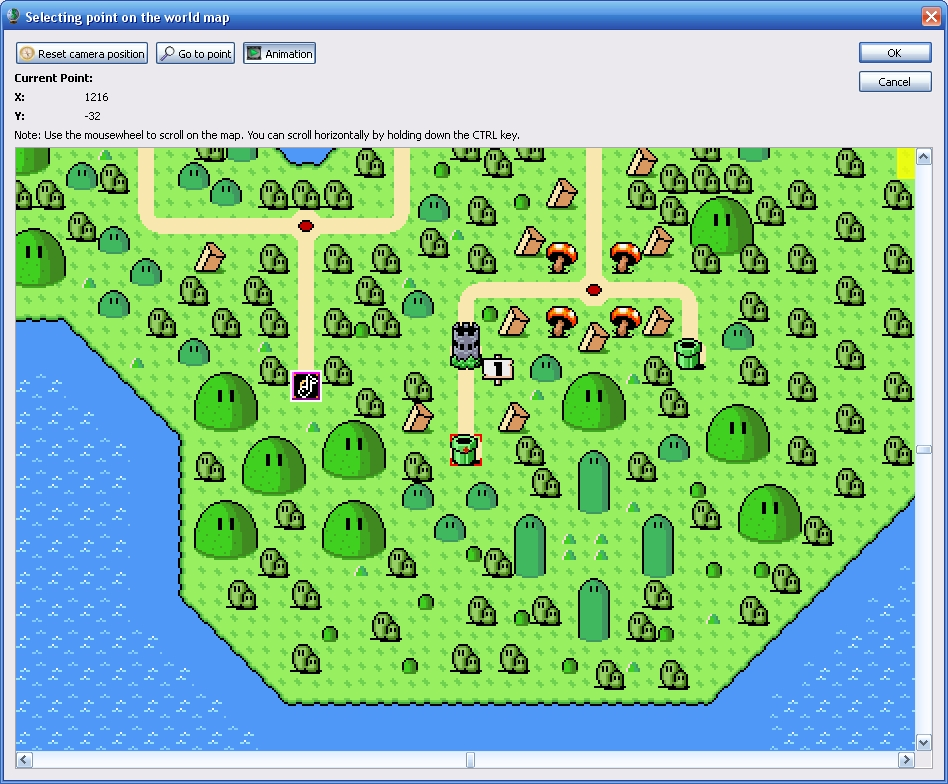
Copyright © 2014-2015 Platformer Game Engine by Wohlstand project. All rights reserved.